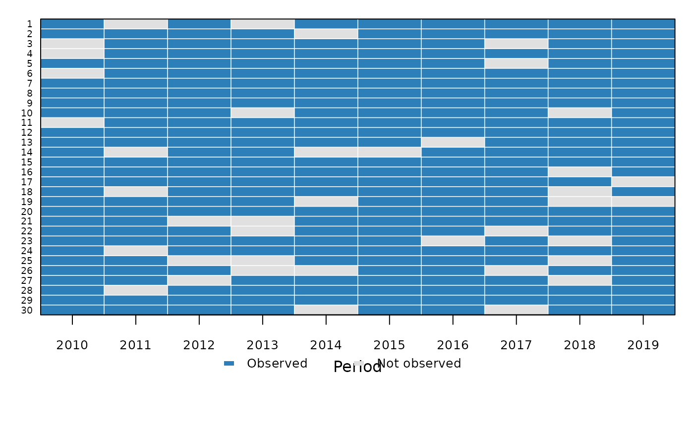
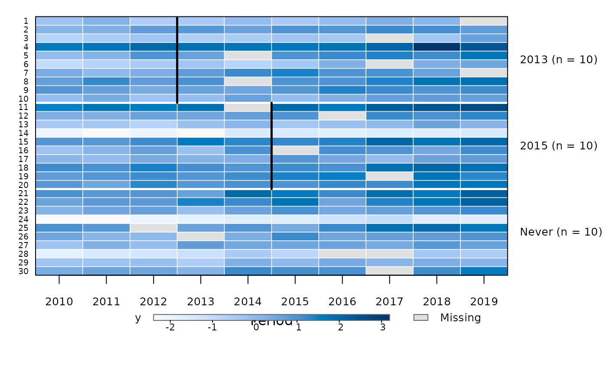
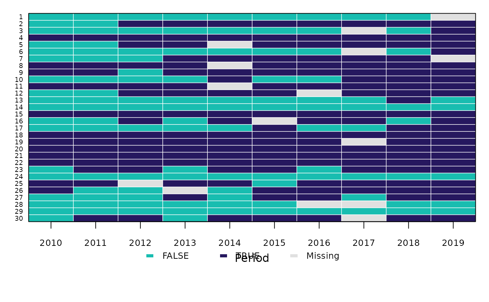

Draws one row per individual and one column per period. With value
the cells are coloured by that variable: a sequential palette with a
colour bar for a numeric variable, one colour per level for a factor,
character or logical variable. Without value the plot shows which
periods each individual is observed in, so the gaps of an unbalanced
panel stand out. Periods in which an individual is not observed, and
missing values of value, are drawn in neutral grey.
Usage
panelplot(
data,
index,
value = NULL,
treat = NULL,
labels = NULL,
col = NULL,
zlim = NULL,
legend = TRUE,
xlab = "Period",
ylab = NULL,
main = NULL,
...
)Arguments
- data
a data frame in long format
- index
c(individual, time): column names; the time must be numeric whentreatis given- value
optional name of the column that colours the cells;
NULL(the default) shows observed versus missing periods- treat
optional name of the column with the first treated period, as in
attgt()(0,NAorInffor never-treated units)- labels
logical: show the individual labels on the left axis. The default shows them for at most 60 individuals.
- col
colours: for a numeric
value, the palette (default: a sequential blue palette); for a discretevalue, one colour per level; withoutvalue, the colour of the observed cells- zlim
limits of the colour scale for a numeric
value(default: its range)- legend
logical: add a legend (or colour bar) below the plot
- xlab, ylab, main
axis labels and title (default
ylab: none)- ...
passed to
graphics::image()
Value
a data frame with one row per individual in plotting order (id,
cohort when treat is given, n_periods observed and n_missing
missing values of value), invisibly
Details
With treat the individuals are sorted by treatment cohort as in
treatmentplot() (earliest adopters at the top, never-treated units at
the bottom), the cohorts are separated by white lines and labelled on
the right with their sizes, and a black edge marks the first treated
period of each cohort. Without treat the individuals are in the order
of their identifiers. The unit labels are shown for at most 60
individuals by default; with many individuals the tiles are drawn as a
raster.
See also
treatmentplot() for the treatment timing alone, trendplot()
for the mean outcome paths
Other policy evaluation:
attgt(),
did(),
etwfe(),
eventplot(),
eventstudy(),
treatmentplot(),
trendplot()
Examples
set.seed(1)
d <- expand.grid(id = 1:30, year = 2010:2019)
d$first <- rep(c(2013, 2015, 0), each = 10)[d$id]
d$y <- rnorm(30)[d$id] + 0.1 * (d$year - 2010) + rnorm(nrow(d), sd = 0.3)
d$y[sample(nrow(d), 15)] <- NA
# observed and missing periods of an unbalanced panel
u <- d[-sample(nrow(d), 40), ]
panelplot(u, index = c("id", "year"))

# outcome values, sorted by treatment cohort
panelplot(d, index = c("id", "year"), value = "y", treat = "first")

# a discrete variable
d$high <- d$y > 0.5
panelplot(d, index = c("id", "year"), value = "high")
